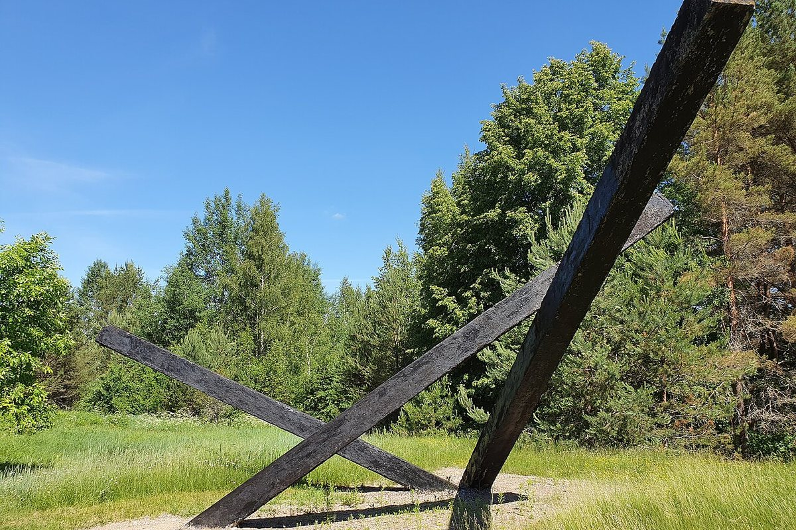
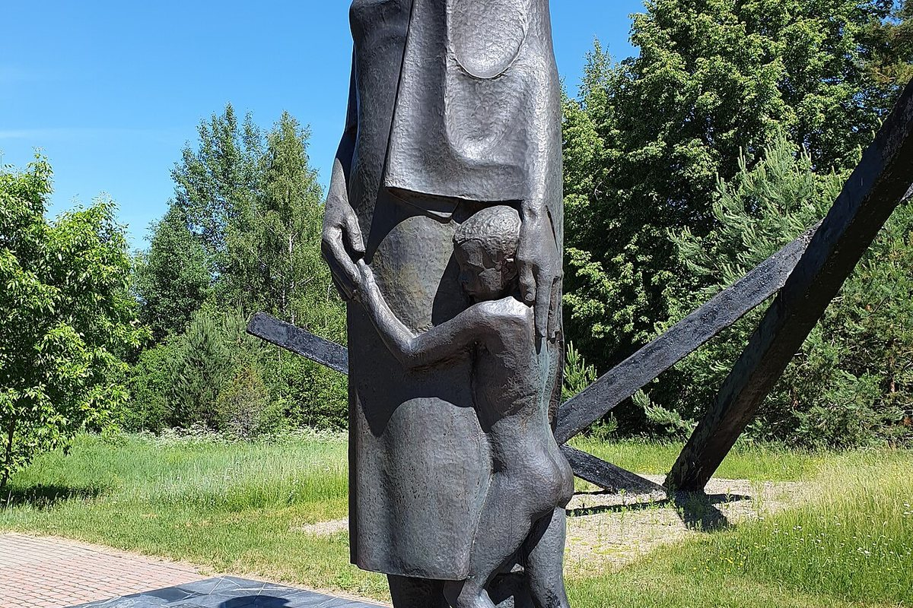
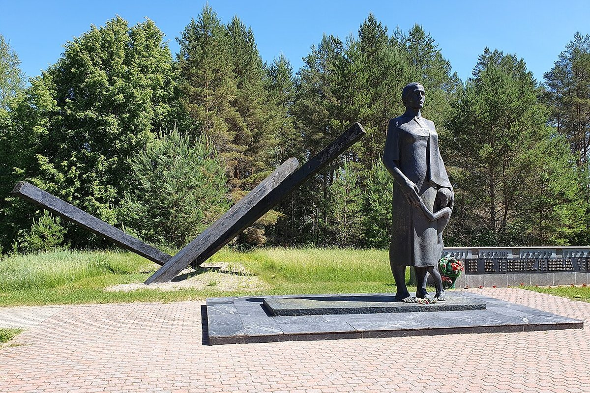

A village in the Lahoysk district destroyed on 19 July 1944. Forty-four people died in the fire, including 29 children.
Dalva is a village in the Lahoysk district destroyed on 19 July 1944, ten days before the Red Army arrived. Forty-four people died in the fire: 29 children, 13 women and 2 men.
The punitive detachment surrounded the village, drove the residents into a house, threw a grenade inside and then set the village on fire from both sides. The oldest victim was 80; the youngest was 2.
The memorial opened in 1975. Its author, sculptor Vladimir Terebun, developed the project as his diploma work. The composition includes a sculpture of a mother with a child, charred beams, a Wall of Memory with the names of the dead and symbolic crowns of log houses on the sites of former homes.
Forty-four birches were planted here in memory of the victims. Dalva is part of the Khatyn memorial complex and one of the places where the price of peace is felt especially sharply.


